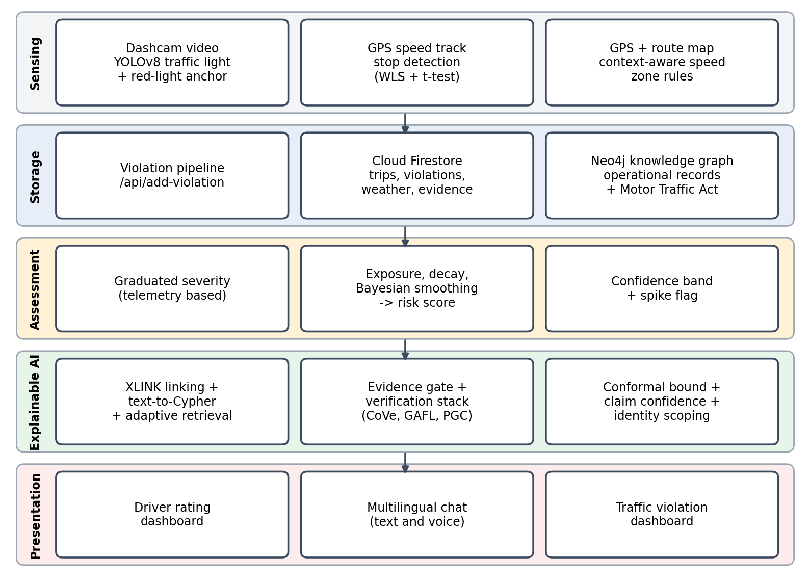
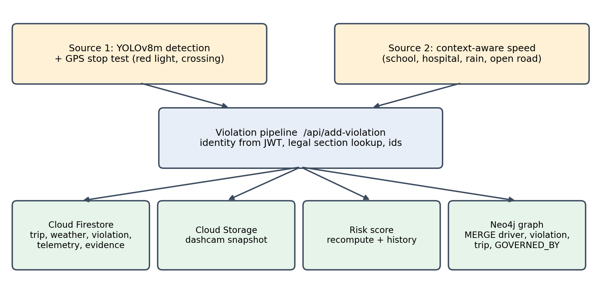
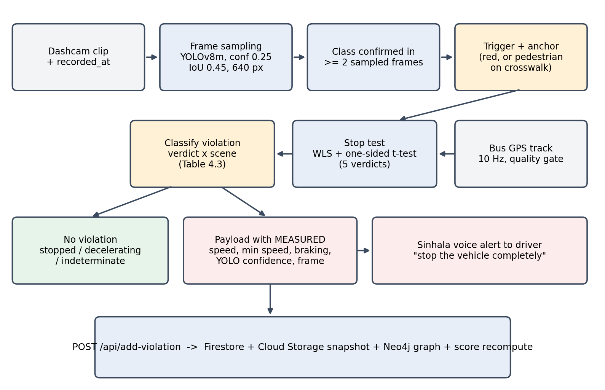
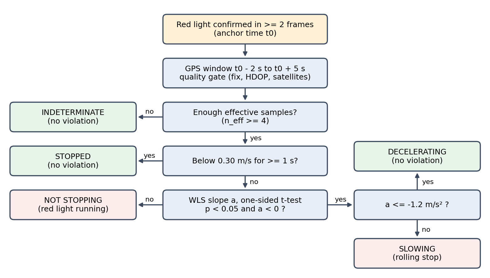
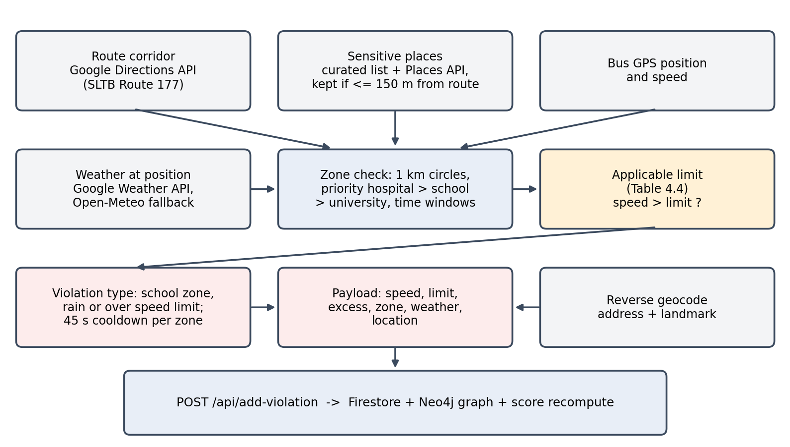
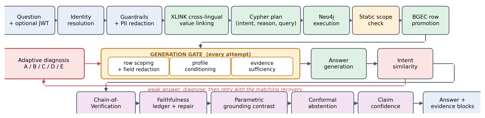
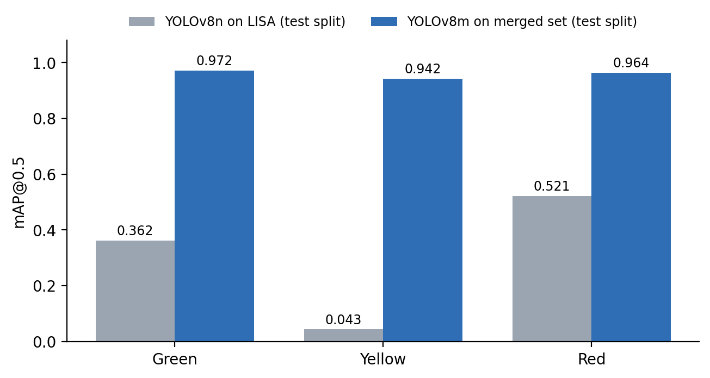
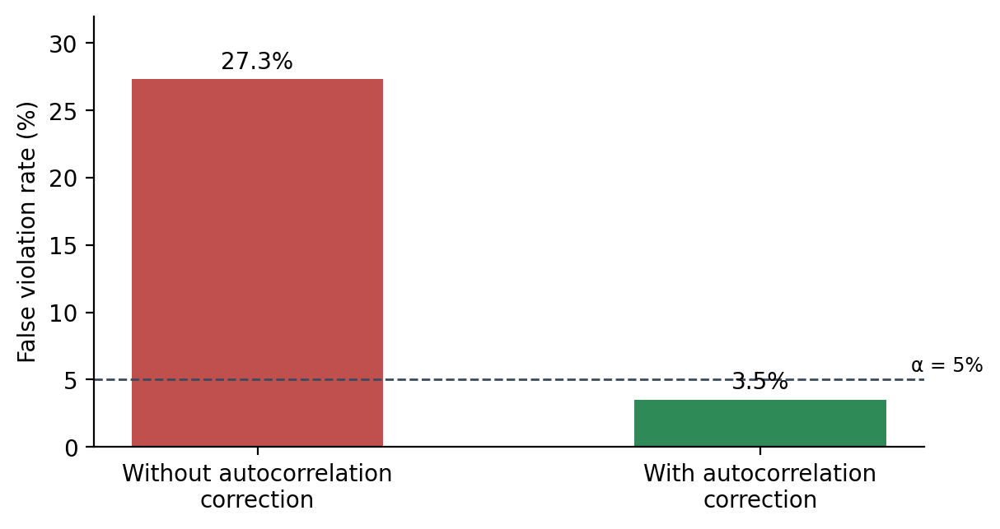
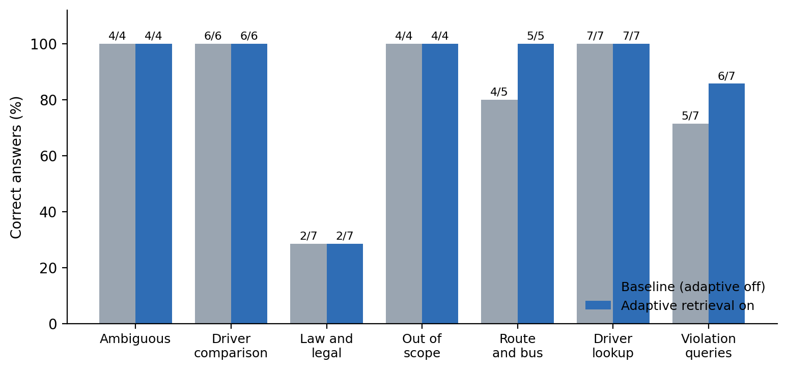
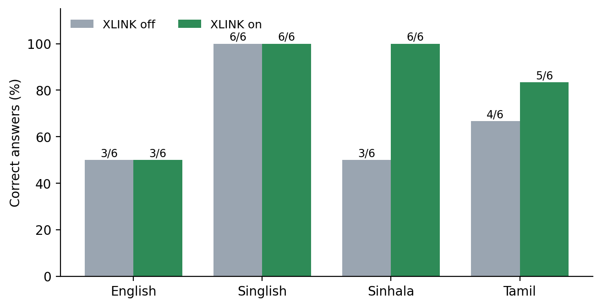

Driver assessment you can check and question
Detects traffic violations from the bus dashcam, GPS and route context, scores every driver fairly, and explains each score in English, Sinhala, Tamil or Singlish with answers that are checked against the evidence before anyone sees them.
Why driver assessment needed rethinking
Four problems, each one making a driver score harder to trust.
A detection is not a violation
A camera that flags every red light it sees punishes the drivers who stopped correctly. What matters is what the bus did after the light turned red.
One speed limit does not fit every road
60 km/h can be legal on an open road and dangerous outside a school at 8 a.m. or in heavy rain. Fixed limits ignore that context.
Scores are numbers nobody can question
Flat point deductions ignore how much a driver has driven, never forgive old mistakes, and give no reason a driver or manager can check against the law.
LLM explanations can be confidently wrong
A language model asked about a driver can state a fine, a section or a date that is not in the records. In a disciplinary setting that is worse than no answer.
Existing work detects lights and signs but does not test whether the vehicle then stopped; fleet telematics compare speed against one fixed limit; adaptive RAG methods need token probabilities, internal model signals or training that a commercial black-box model does not expose; and verification methods rely on another model that can itself hallucinate. No system ties these together into one explainable, evidence-backed assessment for bus drivers in Sri Lanka.
Objectives
- Train a detector for traffic lights, crosswalks and pedestrians, and decide violations only after a statistical GPS stop test.
- Set speed limits from hospital, school and university zones, time of day and live weather along the bus route.
- Store every violation in Firestore and the Neo4j graph, linked to the Motor Traffic Act, and score drivers with an exposure-normalised, time-decayed rate.
- Answer questions over the graph with a failure-aware, multilingual GraphRAG pipeline that works with a black-box model.
- Verify every claim in an answer against the retrieved rows, with a statistical bound on unsupported claims.
- Show each user only what their role allows, and integrate everything into the CITOS platform.
Research questions
- RQ1Can a camera detector and a GPS stop test together decide red-light and crossing violations without accusing drivers who stopped?
- RQ2Can speed limits that depend on location, time and weather be applied automatically along a route?
- RQ3Does diagnosing why retrieval failed, and choosing a matching repair, improve accuracy without extra latency?
- RQ4Does binding Sinhala, Tamil and Singlish mentions to graph values improve accuracy on non-English questions?
- RQ5Can answers be verified claim by claim without extra model inference, with a certified bound on errors?
- RQ6Can a driver score be made fair to exposure and allow recovery?
How the research was carried out
Every mechanism was built, measured and kept only when the evidence supported it.
Build the artefact in short cycles, evaluate each mechanism, and keep it only if the evidence shows it helps.
Both detectors were trained on Google Colab and evaluated on their own held-out test splits.
The stop test was checked on validation tracks with known ground truth, the only way to measure a false violation rate.
The same questions were sent to the live system with a mechanism off and on, with every other setting checked to be identical.
Every answer and every checked claim was labelled correct or incorrect by hand.
Four parts, one evidence trail
Two violation sources feed one pipeline into Firestore and the Neo4j knowledge graph. The risk score and the assistant read from the same records, so every score can be explained.


Camera-based violation detection
A YOLOv8m detector finds traffic lights, crosswalks and pedestrians in the dashcam video. Seeing a red light is not enough: a statistical test on the bus GPS speed decides whether the bus actually stopped.
How it works
- 1The dashcam clip is uploaded with the time of its first frame, so video time lines up with GPS time.
- 2YOLOv8m runs on the sampled frames (640 px, confidence 0.25, IoU 0.45).
- 3A class counts only after it appears in two sampled frames, which filters flickers and brake lights.
- 4A confirmed red light, or a pedestrian on a crosswalk, sets the event anchor and triggers the stop test.
- 5The stop test reads the bus GPS speed 2 s before to 5 s after the anchor and returns one of five verdicts.
- 6Only 'slowing' or 'not stopping' becomes a violation, with the measured speed, minimum speed and braking attached, and a Sinhala voice alert tells the driver to stop completely.

Training data and models
We first trained YOLOv8n on the LISA traffic light dataset on a Colab Tesla T4. It reached only 0.309 mAP@0.5 and never detected yellow, so we moved to YOLOv8m on three merged Roboflow datasets (7,417 images, five classes), trained for 100 epochs on a Colab A100.
| Dataset | Source | Classes | Train / val / test | Used for |
|---|---|---|---|---|
| LISA Traffic Light | Public research dataset | Green, yellow, red | 14,247 / 3,766 / 18,252 | Baseline (YOLOv8n) |
| Traffic Light Detection | Roboflow Universe | Green, red, yellow | 3,286 / 50 / 574 | Final model |
| Crosswalk Detection | Roboflow Universe | Crosswalk | 734 / 210 / 105 | Final model |
| Pedestrian Detection | Roboflow Universe (IIT Palakkad) | Pedestrian | 1,773 / 343 / 342 | Final model |
The GPS stop test
A weighted regression fits the speed trend after the red light and a one-sided t-test asks whether the bus was really slowing. Because GPS samples are correlated, the test uses an effective sample size; without that correction it would accuse more than a quarter of drivers who never slowed down. Three of the five verdicts never record a violation.
| Verdict | Meaning | Outcome |
|---|---|---|
| Stopped | Came to rest and stayed below 0.30 m/s for a second | No violation |
| Decelerating | Braking properly when the window ended | No violation |
| Indeterminate | Too few good GPS fixes to decide | No violation (abstain) |
| Slowing | Real deceleration, far too gentle to stop | Rolling stop |
| Not stopping | No significant deceleration | Red-light running |

Context-aware speed monitoring
The safe speed depends on where the bus is, what time it is and what the weather is doing. The module works out the limit at the bus's position along the route and records speeding against that limit.
How it works
- 1The SLTB Route 177 corridor (Kollupitiya to Kaduwela) is traced with the Google Directions API.
- 2Hospitals, schools, preschools and universities come from a curated list plus the Google Places API, and are kept only if they lie within 150 m of the route.
- 3At each bus GPS position, every sensitive place whose 1 km zone contains the bus is checked, highest priority first.
- 4Live weather at the bus position comes from the Google Weather API, with Open-Meteo as a fallback.
- 5If the bus is faster than the applicable limit, a violation with speed, limit, zone, weather and address is recorded, at most once per zone every 45 seconds.

Applicable limits
| Context | Dry | Rain |
|---|---|---|
| Within 1 km of a hospital (any time) | 35 km/h | 35 km/h |
| Within 1 km of a school or preschool (06:00 to 14:00) | 40 km/h | 35 km/h |
| Within 1 km of a university (06:00 to 17:30) | 40 km/h | 35 km/h |
| Open corridor | 70 km/h | 50 km/h |
Linked to the Motor Traffic Act
Violations from both sources are stored in Firestore and merged into the Neo4j graph with the sections that govern them.
| Violation | Section | Penalty section |
|---|---|---|
| Red-light running / rolling stop | 151(2) | 217 |
| Pedestrian crossing rolling stop | 151(2) | 217 |
| School, hospital or university zone speeding | 141A | 141A |
| Rain speeding | 141A | 141A |
A fair driver risk score
The old score started at 100 and subtracted fixed points. The new one borrows the credibility models motor insurers use, so it is fair to how much and where a driver drives, and it lets a driver recover.
A rate, not a count
Risk is severity per kilometre driven, so a driver with 5,000 trips is not judged like one with 5.
Fair to new drivers
A prior pulls drivers with little history toward the fleet average until enough evidence builds up.
Violations fade
Both sides of the rate halve every six months, so a clean period raises the score with no special rule.
Severity is measured
A rolling stop is graded by the minimum speed at the crossing, speeding by the excess over the limit.
Weather is fair
Rain, fog and storms increase exposure, so a driver rostered onto monsoon shifts is not punished for it.
Honest confidence
Each score says how much driving supports it, and a separate flag catches three violations within 30 days.
risk = (prior + decayed severity) / (prior exposure + decayed kilometres)·score = 100 · e−k · risk
DriverGraphRAG: answers that are checked
Drivers and fleet managers ask about scores, violations and the law in English, Sinhala, Tamil or Singlish. The model writes a graph query, answers only from the rows it gets back, and every claim is verified before the answer is shown.

Diagnose before retrying
When a first answer is weak, the controller first works out why, then applies the matching repair. Two failures that both return nothing need opposite fixes, which is why Mode E is checked before Mode A.
| Mode | What went wrong | Repair |
|---|---|---|
| E | No rows, and a value never matched anything in the graph | Swap in the real graph value, keep the query |
| A | No rows, values were correct | Ask for a broader query |
| B | Still no rows after broadening | Search the legal text by meaning |
| C | Rows came back, but the answer was weak | Ask for a targeted query using those rows |
| D | Law and records were never linked in one row | Bridge retrieval across both |
| F | The answer used values not in the rows | Regenerate, naming the bad values |
Layers that keep answers honest
- 1Evidence sufficiency gate
Before writing, checks the rows actually contain what the question needs, for example that a penalty question really has penalty text.
- 2Chain-of-Verification
Asks verification questions about the draft and answers them from the rows with the draft hidden, then cross-checks the values.
- 3Faithfulness ledger (GAFL)
Extracts every amount, section, date, time, code, quantity and name and looks each one up in the rows, with no extra model call.
- 4Grounding contrast (PGC)
Re-asks with no evidence; anything the model says either way may come from memory and gets lower confidence.
- 5Conformal abstention
A threshold calibrated on labelled answers bounds how often an accepted claim is unsupported.
- 6Claim confidence
Each claim gets a confidence from how it was proved, and weak claims are qualified in the answer text itself.
A design we tried and dropped
Early on, we assumed questions had to be translated to English first, so we fine-tuned Qwen2.5-3B-Instruct with LoRA as a Singlish and Tanglish translator, using sentence pairs built from YouTube transcripts translated with NotebookLM. It did not translate reliably enough. Testing then showed that Gemini already understood the languages; what failed was turning a word into the exact value stored in the database. That finding led directly to cross-lingual value linking (XLINK).
What the evaluation showed
Results from held-out test sets, controlled validation and paired ablations on the live system.
Violation detection
| Class | Precision | Recall | mAP@0.5 | mAP@0.5:0.95 |
|---|---|---|---|---|
| All classes | 0.939 | 0.948 | 0.973 | 0.760 |
| Green | 0.915 | 0.940 | 0.972 | 0.705 |
| Yellow | 0.879 | 0.895 | 0.942 | 0.714 |
| Red | 0.953 | 0.943 | 0.964 | 0.666 |
| Crosswalk | 0.966 | 0.969 | 0.990 | 0.859 |
| Pedestrian | 0.982 | 0.993 | 0.994 | 0.854 |


Reading the stop-test result
On 400 controlled tracks where nobody braked, the corrected test flagged 3.5%, close to the chosen 5% significance level. The uncorrected version flagged 27.3%. On five tracks with known braking from 0.8 to 2.4 m/s², the estimated deceleration was off by only 0.022 m/s² on average.
DriverGraphRAG
| Study | Before | After | Notes |
|---|---|---|---|
| Adaptive retrieval (40 paired questions) | 80.0% | 85.0% | 2 fixed, 0 broken, no extra latency (17.1 s vs 17.0 s mean) |
| Cross-lingual linking (24 questions, 21 completed) | 76.2% | 95.2% | Sinhala 3/6 → 6/6, Tamil 4/6 → 5/6 |
| Wrong-subgraph fault injection (10 questions) | - | 8 / 10 | All diagnosed as Mode C; confidence improved on 8 |
| Faithfulness ledger (341 hand-labelled claims) | - | 0 false alarms | No model inference needed |
| Conformal certificate | - | ≤ 2.07% | Unsupported claims at 95% confidence, keeping 97.1% of content |


Research journey
- Mar 2026Project proposal
Proposed a multi-sensor assessment and coaching system with explainable reports for Sri Lankan buses.
- May 2026First graph and detectors
Built the first Neo4j graph and driver rating dashboard. Trained YOLOv8n on LISA as a baseline, then YOLOv8m on three merged datasets.
- Aug 2026From translation to linking
Replaced the fine-tuned Qwen translator with LLM text-to-Cypher, adaptive retrieval and cross-lingual value linking.
- Aug 2026Verification and fairness
Added the sufficiency gate, GAFL, CoVe, PGC, conformal abstention, identity scoping, the new risk score, the GPS stop test and context-aware speed.
- Sep 2026Evaluation and paper
Ran the paired ablations and calibrations and prepared the research paper.
- Oct 2026Thesis and integration
Integrated into the CITOS platform and submitted the individual thesis.
Limitations and next steps
- Detector test sets come from public datasets; the next step is a held-out set of NCG fleet footage, including night driving.
- Without mapped stop lines, the stop test measures stopping behaviour, not stop-line compliance.
- Speed zones are configured for Route 177 and do not yet follow school holidays.
- The GraphRAG question sets are small (40 and 24), so gains are directional; legal questions remain the hardest.
- The verifier checks values, not the relationships between them.
Research documents
Mar 2026
Project proposal
R26-DS-013 individual proposal
2026
Research paper
Diagnose, Verify, Personalize: A Black-Box GraphRAG Pipeline for Multilingual Driver-Safety and Traffic-Law Question Answering
Oct 2026
Individual thesis
Intelligent Bus Driver Assessment & Explainable AI-Based System